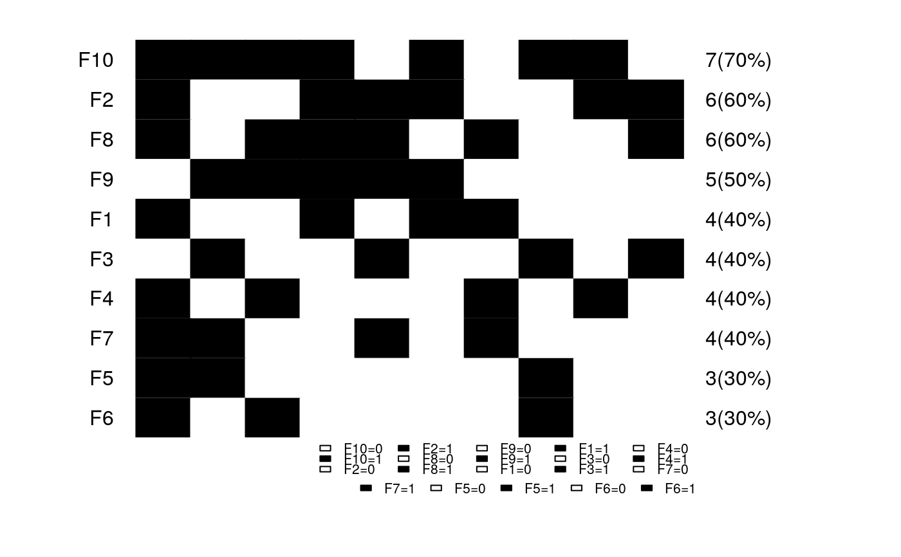

makepanel functionality with user defined order or when no group is specified or discrete data.makepanel_order.RdA makepanel functionality with user defined order or when no group is specified. This also caters to mutation data or discrete data, and tries to arrange panlemap by decreasing frequency of features and columns.
makepanel_order(orderl="user", mat, mat.col, mat.type, legend=FALSE, get.stat=FALSE, NA.flag=FALSE, NA.col="grey", lnrow = 3, lncol = 5,lcex = 1, legend.vec = NULL, legend.col = NULL, lheight = 1,...)
| orderl | required. default is |
|---|---|
| mat | required. data frame. of values that you want to plot. Make sure they are ordered in the same order as |
| mat.col | required. list. of color values to be coded. names of the list are column names of |
| mat.type | required. vector. type of data type in mat. |
| NA.flag | logical, default is |
| NA.col | default is "grey". see |
| get.stat | logical, default is |
| legend | logical. default is |
| lnrow | numeric. Number of rows in each panelet of the legend. Adjust to fit in plot margins. Default is 3 rows. See |
| lncol | numeric. Number of columns on each panelet of the legend. Adjust accordingly for legibility. Default is 5 columns.Only when |
| lcex | numeric. Magnification of legend labels. Default value is |
| legend.vec | vector. When |
| legend.col | vector. When |
| lheight | numeric. If your legend overflows the current |
| ... | pass optional arguments here |
... can pass other parameters. Use it for controlling names and colors of panelets via cex, col. border line type and thickness can be controlled via lty and lwd respectively.
See makepanel
A colored panelemap of discrete/continuous values is plotted ordered according to the input data.
if get.stat==TRUE and orderl == "user"
tab of summary statistics is returned. See get.stat
if(orderl == "bin")
tab of summary statistics is returned. See get.stat and
mat.order an ordered data matrix is returned
makepanel
#Simulate a 0 and 1 10x10 matrix mat = matrix(sample(c(0,1),100, replace=TRUE), 10,10) rownames(mat) = paste0("S", 1:10) colnames(mat) = paste0("F", 1:10) mat.type=rep(1, ncol(mat)) cc = c("white", "black") mat.col<-list(); mat.col[[1]] = cc; mat.col = rep(mat.col,ncol(mat)); names(mat.col) = colnames(mat) makepanel_order(orderl="bin", mat=mat, mat.col=mat.col, mat.type=mat.type, legend=TRUE, get.stat=TRUE)#> $tab #> [,1] #> F10=0 "3(30%)" #> 1 "7(70%)" #> F2=0 "4(40%)" #> 1 "6(60%)" #> F8=0 "4(40%)" #> 1 "6(60%)" #> F9=0 "5(50%)" #> 1 "5(50%)" #> F1=0 "6(60%)" #> 1 "4(40%)" #> F3=0 "6(60%)" #> 1 "4(40%)" #> F4=0 "6(60%)" #> 1 "4(40%)" #> F7=0 "6(60%)" #> 1 "4(40%)" #> F5=0 "7(70%)" #> 1 "3(30%)" #> F6=0 "7(70%)" #> 1 "3(30%)" #> #> $mat.order #> F10 F2 F8 F9 F1 F3 F4 F7 F5 F6 #> S8 1 1 1 0 1 0 1 1 1 1 #> S1 1 0 0 1 0 1 0 1 1 0 #> S2 1 0 1 1 0 0 1 0 0 1 #> S7 1 1 1 1 1 0 0 0 0 0 #> S9 0 1 1 1 0 1 0 1 0 0 #> S3 1 1 0 1 1 0 0 0 0 0 #> S4 0 0 1 0 1 0 1 1 0 0 #> S5 1 0 0 0 0 1 0 0 1 1 #> S6 1 1 0 0 0 0 1 0 0 0 #> S10 0 1 1 0 0 1 0 0 0 0 #>